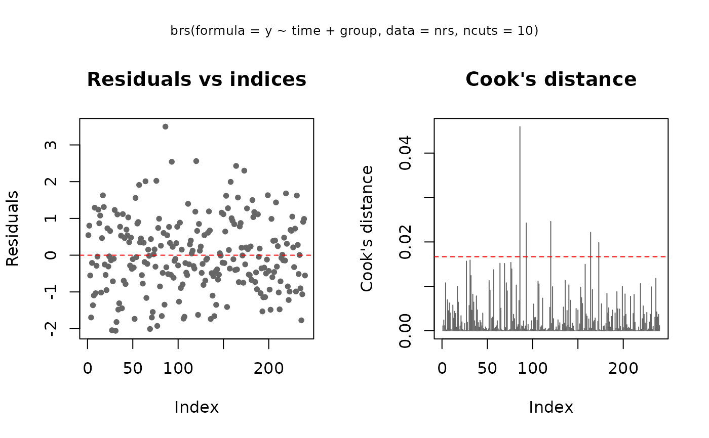

Fits by maximum likelihood a beta regression for scores on a bounded scale,
treated as coarsened (interval-censored) observations of a latent beta
variable (Lopes, 2023). A one-part formula y ~ x1 + x2 keeps the
second parameter constant (brs_fit_fixed); a two-part formula
y ~ x1 + x2 | z1 + z2 also models it (brs_fit_var).
Arguments
- formula
A
Formula-style formula with two parts:y ~ x1 + x2 | z1 + z2.- data
Data frame.
- link
Link for the first parameter (the mean under
repar = 1, 2; the shape \(p\) underrepar = 0).NULL(default) selects the link implied byrepar:"logit"forrepar = 1, 2,"log"forrepar = 0. See the 'Reparameterizations and links' section ofbrsfor the admissible values.- link_phi
Link for the second parameter.
NULL(default) selects"logit"forrepar = 2(dispersion on \((0, 1)\)) and"log"forrepar = 0, 1(positive shape/precision).- ncuts
Integer \(K\): the maximum score, so that the scale is \(0, 1, \ldots, K\) (\(K + 1\) categories).
NULL(default) uses the value stored bybrs_preporbrs_sim, or 100 for raw data.- lim
Half-width of the score cell in \((0, 0.5]\) (
interval = "mid"only).NULL(default) usesattr(data, "lim")frombrs_prep, or 0.5; same rule asncuts. Values below 0.5 warn (partial coarsening).- repar
Reparameterization scheme (default 2); see
brs_repar.- method
Optimization method (default
"BFGS").- hessian_method
How the Hessian for
vcov()is computed:"cpp"(default; compiled chain rule on the linear predictors),"numDeriv"(numDeriv::hessian()of the log-likelihood) or"optim"(the finite-difference Hessian returned byoptim).- interval
Direction of the uncertainty interval,
"mid","right"or"left"(seebrs_check).NULL(default) usesattr(data, "interval")frombrs_prep, or"mid"; same rule asncuts.- start
Optional numeric vector of starting values (mean coefficients, then dispersion coefficients).
NULL(default) usescompute_start(). Refits (bootstrap, jackknife) pass the parent estimate here.- control
Control list for
optim; its entries are merged into the defaultlist(maxit = 5000L).
Value
An object of class "brs": a list with, among others,
par (estimates on the link scales), coefficients
(mean and precision parts), value (maximised
log-likelihood), hessian, convergence, diagnostics
(see 'Fit diagnostics'), hatmu (first parameter per observation:
the mean, or the shape \(p\) under repar = 0), hatphi,
Y (columns left, right, yt, y,
delta), ncuts, lim, interval, repar,
link and link_phi.
Details
The scores run over \(0, 1, \ldots, K\) with \(K =\) ncuts: the
scale has \(K + 1\) categories and \(K\) is its maximum. A scale that
starts at 1, such as a Likert item 1–5, must be shifted to 0–4 and
fitted with ncuts = 4; otherwise the lowest category is read as an
interior score and the censoring of the lower border is lost.
Raw scores are converted to cells and censoring types by
brs_check with ncuts, lim and interval;
data from brs_prep or brs_sim are used as they
are, with their stored ncuts, lim and interval. Values
in \((0, 1)\) are exact observations. The model is
$$Y_i \sim \mathrm{Beta}(a_i, b_i), \qquad
g_1(\mu_i) = x_i^\top \beta, \qquad g_2(\phi_i) = z_i^\top \gamma,$$
with \((a_i, b_i)\) obtained from \((\mu_i, \phi_i)\) by
brs_repar.
Likelihood
With cell \([l_i, u_i]\) and censoring type \(\delta_i\),
$$L(\beta, \gamma) = \prod_{i=1}^n f(y_i)^{I(\delta_i = 0)}\,
F(u_i)^{I(\delta_i = 1)}\, \{1 - F(l_i)\}^{I(\delta_i = 2)}\,
\{F(u_i) - F(l_i)\}^{I(\delta_i = 3)},$$
where \(f\) and \(F\) are the beta density and distribution function
with shapes \((a_i, b_i)\). The four factors are exact values
(\(\delta = 0\)), the lowest score (\(\delta = 1\), left-censored),
the highest score (\(\delta = 2\), right-censored) and the other scores
(\(\delta = 3\), interval-censored). This is eq.
eqn_verossimilhanca_geral of Lopes (2023); the table of censoring
types in the same section swaps the labels \(\delta = 1\) and
\(\delta = 2\), and the package follows the equation.
Numerical details: endpoints are clamped to
\([10^{-5}, 1 - 10^{-5}]\) and there is no probability floor; an
interval probability uses lower-tail probabilities when the interval
midpoint is at or below the mean \(a/(a + b)\) and upper tails
otherwise, which avoids cancellation; below \(10^{-240}\) an endpoint
Laplace approximation of the tail replaces it; a non-finite
contribution becomes \(-10^6\), as does a NaN parameter. The mean and the dispersion
(repar = 2) are clamped to \([10^{-5}, 1 - 10^{-5}]\), the
precision and the shape \(p\) to \([10^{-5}, 10^8]\), and the beta
shapes to \([10^{-12}, 10^8]\).
Estimation
optim (method = "BFGS", the default, or
"L-BFGS-B"; maxit = 5000 unless control says
otherwise) maximises the log-likelihood, which is evaluated in C++. The
gradient uses the chain rule on the two linear predictors: the derivatives
of each contribution with respect to \(\eta_{1i}\) and \(\eta_{2i}\)
are Richardson central differences with step
\(10^{-4}\max(1, |\eta|)\), and the gradient is
\(X^\top d_1\) and \(Z^\top d_2\). The Hessian behind
vcov() is built the same way from the per-observation second
derivatives (step \(3 \times 10^{-4}\max(1, |\eta|)\);
hessian_method = "cpp", the default):
$$H = \left(\begin{array}{cc} X^\top W_{11} X & X^\top W_{12} Z \\
Z^\top W_{12} X & Z^\top W_{22} Z \end{array}\right),$$
with \(W_{jk}\) diagonal matrices of the second derivatives of each
contribution in \((\eta_{1i}, \eta_{2i})\). "numDeriv"
differentiates the log-likelihood with numDeriv::hessian() and
"optim" takes the finite-difference Hessian of optim.
Lopes (2023, "Estimacao") also uses BFGS with numerical derivatives; here
they are taken on the linear predictors, not on the coefficients.
Starting values: start when given (bootstrap and jackknife refits
pass the parent estimate); otherwise a quasi-binomial GLM of the cell
midpoints for the mean, and for the second parameter the moment estimate on
the midpoints as the intercept with zero slopes; under repar = 0
both shapes by the method of moments. The covariance matrix is
\((-H)^{-1}\) at the estimate (vcov.brs); no generalised
inverse is used.
Fit diagnostics
Before optim, the mean and precision model matrices are checked
(pivoted QR, tolerance \(10^{-7}\); condition number of the matrix with
unit-length columns). After it, fit$diagnostics holds
grad_norm (largest absolute gradient), grad_gain (the
log-likelihood a Newton step would still gain,
\(\frac12 g^\top (-H)^{-1} g\)), grad_step (that
step in standard errors), min_eig,
max_eig and min_eig_scaled (eigenvalues of \(-H\), the last
in correlation form), hessian_nd, n_clamped and
clamped (observations on the clamps of the likelihood). Each problem
gives one line:
- “model matrix is rank deficient” (error)
Some columns are linear combinations of others (the message names them). Remove or recode them.
- “model matrix is nearly collinear”
Condition number above \(10^4\): estimates and standard errors are unstable. Drop or combine the named columns, or centre them.
- “Optimizer did not converge”
optimstopped at its iteration limit or failed. Trymethod = "L-BFGS-B", rescale the covariates or simplify the model.- “Gradient not ~0 at the estimate”
A Newton step would still gain more than 0.01 in log-likelihood although
optimreported convergence. Refit with the othermethod; the message asks to rescale the covariates when their scales differ by more than \(10^3\) (e.g. a raw income next to a dummy).- “Hessian near-singular or not negative definite (SEs unreliable)”
The likelihood is nearly flat or curved the wrong way in some direction: a parameter that is not identified, or covariates on very different scales (the message then asks to rescale them).
vcov()returnsNAfor variances it cannot estimate; use likelihood-ratio tests (anova.brs) orbrs_bootstrapinstead of Wald statements, rescale, or simplify the model.- “observations ... on the clamp boundary”
Fitted means, dispersions or shapes sit on the numerical limits above, typically because a group of observations lies entirely at one end of the scale (separation) or every observation is censored on the same side. The coefficients drift towards infinity and are not interpretable; merge sparse groups or remove the separating covariate.
brsmm adds a check of the variance components.
Reparameterizations and links
repar | parameters (Lopes, 2023) | link | link_phi |
| 0 | shapes \(p, q > 0\); eq. eqn_beta_p1 (regression on the
shapes is a package extension) | log, sqrt | log, sqrt |
| 1 | mean \(\mu \in (0, 1)\), precision \(\phi > 0\); "parametrizacao 1" (Ferrari and Cribari-Neto, 2004) | logit, probit, cauchit, cloglog | log, sqrt |
| 2 | mean \(\mu \in (0, 1)\), dispersion \(\phi \in (0, 1)\); "parametrizacao 2" (Bayer, 2011), written \(\sigma\) there | logit, probit, cauchit, cloglog | logit, probit, cauchit, cloglog |
The first link of each cell is the default (link = NULL,
link_phi = NULL); any other combination is an error.
"identity", "inverse" and "1/mu^2" are not accepted
for positive parameters. With "sqrt" the inverse link is flat for
\(\eta \le 0\), and a warning is issued when a fitted linear predictor
lies there. The mean and variance of \(Y\) under each scheme are given
in brs_repar. Under repar = 0 the object stores the
shape \(p\) in hatmu, while fitted(),
predict(type = "response"), residuals and marginal effects use
\(E[Y] = p/(p + q)\).
Interval direction
interval = "mid" (default) uses the cells
\([s - \mathrm{lim}, s + \mathrm{lim}]/K\); "right" and
"left" use \(K + 1\) equal cells \([s, s + 1]/(K + 1)\) (the
dissertation's \(r\) and \(l\), with a package normalisation).
"right" and "left" give the same fit and differ only in
predict(type = "score"); "mid" and "right"/"left"
are different coarsening models, whose log-likelihoods and AIC are not
comparable. Details: brs_check.
References
Lopes, J. E. (2023). Modelos de regressao beta para dados de escala. Master's dissertation, Universidade Federal do Parana, Curitiba. URI: https://hdl.handle.net/1884/86624.
Ferrari, S. L. P., and Cribari-Neto, F. (2004). Beta regression for modelling rates and proportions. Journal of Applied Statistics, 31(7), 799–815. doi:10.1080/0266476042000214501
Bayer, F. M. (2011). Modelagem e inferencia em regressao beta. PhD thesis, Universidade Federal de Pernambuco.
Hawker, G. A., Mian, S., Kendzerska, T., and French, M. (2011). Measures of adult pain: Visual Analog Scale for Pain (VAS Pain), Numeric Rating Scale for Pain (NRS Pain), McGill Pain Questionnaire (MPQ), Short-Form McGill Pain Questionnaire (SF-MPQ), Chronic Pain Grade Scale (CPGS), Short Form-36 Bodily Pain Scale (SF-36 BPS), and Measure of Intermittent and Constant Osteoarthritis Pain (ICOAP). Arthritis Care and Research, 63(S11), S240-S252. doi:10.1002/acr.20543
Examples
# Synthetic NRS-11 pain scores (0-10, so ncuts = 10): 4 groups x 3
# post-operative times, patterned on the knee-surgery design of Lopes (2023).
# Simulated, not real data.
set.seed(2023)
nrs <- expand.grid(id = 1:80, time = c("6h", "12h", "24h"))
nrs$group <- factor(paste0("g", (nrs$id - 1) %% 4 + 1))
eta <- -1.3 + c(0, 0.75, 0.3)[nrs$time] + c(0, -0.1, 0.05, 0.1)[nrs$group]
shp <- brs_repar(mu = plogis(eta), phi = 0.3, repar = 2) # dispersion 0.3
nrs$y <- round(10 * rbeta(nrow(nrs), shp$shape1, shp$shape2))
# Default cells [s - 0.5, s + 0.5] / 10; scores 0 and 10 are censored
fit <- brs(y ~ time + group, data = nrs, ncuts = 10)
summary(fit)
#>
#> Call:
#> brs(formula = y ~ time + group, data = nrs, ncuts = 10)
#>
#> Quantile residuals:
#> Min 1Q Median 3Q Max
#> -2.6508 -0.6413 -0.0744 0.6394 3.4755
#>
#> Coefficients (mean model with logit link):
#> Estimate Std. Error z value Pr(>|z|)
#> (Intercept) -1.34757 0.19310 -6.979 2.98e-12 ***
#> time12h 0.80357 0.18644 4.310 1.63e-05 ***
#> time24h 0.52379 0.18703 2.801 0.0051 **
#> groupg2 -0.24057 0.21221 -1.134 0.2570
#> groupg3 0.02198 0.20595 0.107 0.9150
#> groupg4 0.03061 0.20890 0.147 0.8835
#> ---
#> Signif. codes: 0 ‘***’ 0.001 ‘**’ 0.01 ‘*’ 0.05 ‘.’ 0.1 ‘ ’ 1
#>
#> Phi coefficients (precision model with logit link):
#> Estimate Std. Error z value Pr(>|z|)
#> (phi) -0.87023 0.09603 -9.062 <2e-16 ***
#> ---
#> Signif. codes: 0 ‘***’ 0.001 ‘**’ 0.01 ‘*’ 0.05 ‘.’ 0.1 ‘ ’ 1
#> ---
#> Log-likelihood: -502.6418 on 7 Df | AIC: 1019.2835 | BIC: 1043.6480
#> Pseudo R-squared: 0.0801 (midpoint approx.; interpret with caution for heavily censored data)
#> Number of iterations: 38 (BFGS)
#> Censoring: 187 interval | 50 left | 3 right
#>
confint(fit)
#> 2.5 % 97.5 %
#> (Intercept) -1.7260446 -0.9691007
#> time12h 0.4381456 1.1689950
#> time24h 0.1572216 0.8903573
#> groupg2 -0.6565030 0.1753598
#> groupg3 -0.3816755 0.4256376
#> groupg4 -0.3788198 0.4400386
#> (phi) -1.0584453 -0.6820188
# Post-fit checks: no log-likelihood left to gain, negative definite Hessian, no clamps
fit$diagnostics[c("grad_gain", "hessian_nd", "n_clamped")]
#> $grad_gain
#> [1] 1.556122e-11
#>
#> $hessian_nd
#> [1] TRUE
#>
#> $n_clamped
#> [1] 0
#>
# Same scores read with right-direction cells [s, s + 1] / 11
fit_r <- brs(y ~ time + group, data = nrs, ncuts = 10, interval = "right")
cbind(mid = coef(fit), right = coef(fit_r))
#> mid right
#> (Intercept) -1.34757268 -1.22519060
#> time12h 0.80357031 0.71838979
#> time24h 0.52378943 0.46661454
#> groupg2 -0.24057159 -0.21019291
#> groupg3 0.02198105 0.02341584
#> groupg4 0.03060944 0.04458164
#> (phi) -0.87023203 -1.16135611
# New patients: mean on (0, 1), latent score, expected score, P(S = s)
nd <- data.frame(time = c("6h", "12h", "24h"), group = "g1")
predict(fit, newdata = nd)
#> [1] 0.2062675 0.3672570 0.3049612
predict(fit, newdata = nd, type = "score")
#> [1] 2.062675 3.672570 3.049612
predict(fit, newdata = nd, type = "expected_score")
#> [1] 2.034529 3.663686 3.034409
round(brs_predict_scoreprob(fit, newdata = nd), 3)
#> score_0 score_1 score_2 score_3 score_4 score_5 score_6 score_7 score_8
#> [1,] 0.326 0.217 0.134 0.096 0.072 0.055 0.041 0.029 0.019
#> [2,] 0.104 0.162 0.139 0.124 0.110 0.098 0.085 0.072 0.058
#> [3,] 0.166 0.193 0.146 0.120 0.100 0.083 0.068 0.054 0.040
#> score_9 score_10
#> [1,] 0.010 0.001
#> [2,] 0.040 0.009
#> [3,] 0.024 0.005
# Randomized quantile residuals respect the censoring (N(0, 1) under the model)
set.seed(1)
summary(residuals(fit, type = "rqr"))
#> Min. 1st Qu. Median Mean 3rd Qu. Max.
#> -2.62992 -0.61329 -0.08796 0.01357 0.70367 2.71764
plot(fit, which = 1:2)
